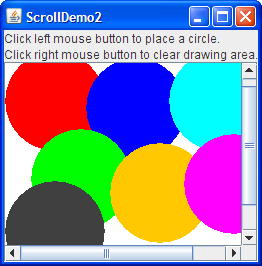

Lección: Usando Componentes Swing
Sección: Cómo Usar Varios Componentes
Cómo Usar Los Paneles de Desplazamiento
Un JScrollPane
proporciona una vista desplazable de un componente. Cuando el espacio de la pantalla es limitado, use un panel
de desplazamiento para visualizar un componente que sea grande o uno cuyo tamaño pueda cambiar dinámicamente.
Otros contenedores usados para ahorrar espacio de pantalla incluyen a los
paneles divididos y los paneles tabulados.
El código para crear un panel de desplazamiento puede ser mínimo. Por ejemplo, aquí tiene una foto de un programa demostración que coloca un área de texto en un panel de desplazamiento porque el tamaño del área de texto crece dinámicamente a medida que se agrega texto al mismo:

Aquí está el código que crea el área de texto, lo hace cliente del panel de desplazamiento, y añade el panel de desplazamiento a un contenedor:
//En un contenedor que usa un BorderLayout:
textArea = new JTextArea(5, 30);
...
JScrollPane scrollPane = new JScrollPane(textArea);
...
setPreferredSize(new Dimension(450, 110));
...
add(scrollPane, BorderLayout.CENTER);
La línea de código en negrita crea el JScrollPane, especificando el área de texto como el cliente
del panel de desplazamiento. El programa no invoca ningún método del objeto JScrollPane, ya que el
panel de desplazamiento maneja todo automáticamente: crea las barras de desplazamiento cuando es necesario,
redibujando el cliente cuando el usuario mueve los tiradores de desplazamiento, y así sucesivamente.
Podría haber notado que el código precedente establece el tamaño preferido del contenedor del panel de
desplazamiento. En la apariencia Java, este tamaño preferido es un poco menos alto que el requerido para que el
área de texto muestre las 5 filas que solicitamos al crearlo. de forma que la barra de desplazamiento
inicialmente visualiza una barra de desplazamiento vertical. Si no restringimos el tamaño del contenedor del
panel de desplazamiento, el panel de desplazamiento sería lo suficientemente grande para que el área de texto
visualizase las 5 filas complemtas y las 30 columnas especificadas en el constructor de JTextArea.
Consulte Dimensionar un Panel de Desplazamiento para obtener información sobre las
técnicas para crear un panel de desplazamiento del tamaño que desee.
El resto de esta sección describe los siguientes temas:
- Cómo Funciona un Panel de Desplazamiento
- Configuración de la Política de la Barra de Desplazamiento
- Proporcionar Decoraciones Personalizadas
- Implementación de un Cliente con Conocimientos de Desplazamiento
- Dimensionar un Panel de Desplazamiento
- Cambiar Dinámicamente el Tamaño del Cliente
- La IPA del Panel de Desplazamiento
- Ejemplos que Usan Paneles de Desplazamiento
Cómo Funciona un Panel de Desplazamiento
Aquí tiene una captura de una aplicación que usa un panel de desplazamiento personalizado para ver una fotografía:

El panel de desplazamiento en esta aplicación parece muy diferente al del programa demostración anterior. En lugar de mostrar texto, este panel de desplazamiento contiene una imagen. El panel de desplazamiento también tiene dos barras de desplazamiento, una cabecera de fila, una cabecera de columna, y cuatro esquinas, tres de las cuales han sido personalizadas.
Pruebe esto:
-
Pulse el botón Lanzar para ejecutar ScrollDemo usando
Java™ Web Start (
descargue KDJ 7 o posterior). Alternativamente, para compilar y ejecutar el ejemplo usted mismo,
consulte el índice de ejemplos.

- Mueva los tiradores en las barras de desplazamiento. Observe la imagen desplazarse y cómo las reglas horizontales y verticales se desplazan a lo largo.
- Si tiene un ratón con una rueda (la cual está generamente entre los botones del ratón) use la rueda del ratón para desplazar la imagen verticalmente.
- Haga clic en el botón cm en la esquina superior izquierda del panel de desplazamiento. Las unidades en las cabeceras de las filas y columnas cambian a pulgadas (o de vuelta a centímetros).
- Pulse los botones de flecha en las barras de desplazamiento. También, intente pulsar sobre la pista por encima o debajo del tirador en la barra de desplazamiento vertical, o a la izquierda o derecha de la horizontal.
-
Mueva el cursor sobre la imagen y presione el cursor. Continuando presionando el cursor, arrastre hacia
un punto fuera de la imagen y párese. El área visible de la imagen se mueve hacia el cursor. Esta
funcionalidad de desplazamiento-por-arrastre está habilitada por el panel de desplazamiento, y con la
IPA de
JComponent, pero está implementada por el componente personalizado que visualiza la imagen. - Redimensione la ventana. Note que las barras de desplazamiento desaparecen cuando el panel de desplazamiento es lo bastante grande para mostrar la imagen enterea y reaparecen de nuevo cuando el panel de desplazamiento es demasiado pequeño para mostrar la imagen entera.
El programa ScrollDemo establece el cliente del panel de desplazamiento cuando crea el panel de desplazamiento:
//Donde las variables miembro son declaradas:
private ScrollablePicture picture;
...
//Donde la IGU es creada:
picture = new ScrollablePicture( ... );
JScrollPane pictureScrollPane = new JScrollPane(picture);
El cliente del panel de desplazamiento es también conocido como la vista o
ventana de visualización. Puede cambiar el cliente dinámicamente llamando al método
setViewportView. Note que JScrollPane no tiene el correspondiente método
getViewportView. Si necesita referirse al objeto del cliente de nuevo, puede o almacenarlo en una
variable o invocar getViewport().getViewportView() en el panel de desplazamiento.
Cuando el usuario manipula las barras de desplazamiento en un panel de desplazamiento, el área del cliente que es visible cambia en consecuencia. Esta foto muestra la relación entre el panel de desplazamiento y su cliente e indica las clases que el panel de desplazamiento se encarga de ayudar:

Un panel de desplazamiento usa una instancia
JViewport para gestionar el área visible del cliente. La ventana (viewport) es responsable
de posicionar y dimensionar el cliente, basado en las posiciones de las barras de desplazamiento, y
mostrarlo.
Un panel de desplazamiento puede usar dos instancias separadas de
JScrollBar para las barras de desplazamiento. Las barras de desplazamiento suministran el
interfaz para que el usuario manipule el área visible. La siguiente figura muestra las tres áreas de una
barra de desplazamiento: el tirador (algunas veces llamado el pulgar), los botones (flecha), y la
pista.
Cuando el usuario mueve el tirador en la barra de desplazamiento vertical arriba y abajo, el área visble del cliente se mueve arriba y abajo. Similarmente, cuando el usuario mueve el tirador en la barra de desplazamiento horizaonta a la derecha y izquierda, el área visible del cliente se mueve hacia adelante y hacia atrás en consecuencia. La posición del tirador relativa a su pista es proporcionalmente igual a la posición del área visible relativa al cliente. En la apariencia Java y algunas otras, el tamaño del tirador da una pista visual de cuánto del cliente es visible.
Al hacer clic en un botón flecha, el usuario puede desplazarse en un incremento de unidad. Al hacer clic en la pista, el usuario puede desplazarse en un incremento de bloque. Si el usuario tiene un ratón con rueda, entonces el usuario puede desplazarse verticalemtne usando la rueda del ratón. La cantidad que la rueda del ratón desplaza es dependiente de la plataforma. Por ejemplo, por defecto en Windows XP, la rueda del ratón desplaza tres unidades de incrementeo; el panel de control del ratón le permite especificar un número diferente de incrementos de unidad o usar en cambio un incremento de bloque. Se encuentra más información acerca de los incrementos de unidad y bloque en Implementación de un Cliente con Conocimientos de Desplazamiento.
Típicamente los programas no instancian directamente o llaman a los métodos sobre una ventana (viewport) o barra
de desplazamiento. En vez de eso, los programas logran su comportamiento de desplazamiento usando la IPA de
JScrollPane y la IPA descrita en Implementación de un Cliente con
Conocimientos de Desplazamiento. Algunos componentes de desplazamiento rápido como JList,
JTable, y JTree también suministran IPAs adicional para
ayudarlo a afectar su comportamiento de desplazamiento.
Configuración de la Política de la Barra de Desplazamiento
En el arranque, el panel de desplazamiento en la aplicación ScrollDemo tiene dos barras de
desplazamiento. Si hace la ventana más grande, ambas barras de desplazamiento desaparecen porque ya no son
necesitadas. Si luego reduce la altura de la ventana sin cambiar su ancho, la barra de desplazamiento vertical
reaparece. Más experimentación mostrará que en esta aplicación ambas barras de desplazamiento desaparecen y
aparecen según sea necesario. Este comportamiento es controlado por la
política de barras de desplazamiento del panel de desplazamiento. En realidad, son dos políticas: cada
barra de desplazamiento tiene la suya propia.
ScrollDemo no establece explícitamente las políticas de la barra de desplazamiento del panel de
desplazamiento ─ usa las que están por defecto. Puede establecer las políticas cuando crea el
panel de desplazamiento o cambiarlas dinámicamente.
De los constructores suministrados por JScrollPane, estos dos le permten establecer políticas de
barra de desplazamiento cuando crea el panel de desplazamiento:
JScrollPane(Component, int, int)
JScrollPane(int, int)
El primer int especifica la política para la barra de progreso vertical; la segunda especifica la
política para la barra de desplazamiento horizontal. Puede también establecer las políticas dinámicamente con
los métodos setHorizontalScrollBarPolicy y setVerticalScrollBarPolicy. Con ambos los
constructores y los métodos, use una de las siguientes constantes definidas en el interfaz
ScrollPaneConstants (el cual es implementado por JScrollPane):
| Política | Descripción |
|---|---|
VERTICAL_SCROLLBAR_AS_NEEDEDHORIZONTAL_SCROLLBAR_AS_NEEDED |
Por defecto. La barra de desplazamiento aparece cuando la ventana de visualización (viewport) es más pequeña que el cliente y desaparece cuando la ventana de visualización es más grande que el cliente. |
VERTICAL_SCROLLBAR_ALWAYSHORIZONTAL_SCROLLBAR_ALWAYS |
Siempore muestra la barra de desplazamiento. Los tiradores desaparecen si la ventana de visualización es lo suficientemente grande para mostrar el cliente entero. |
VERTICAL_SCROLLBAR_NEVERHORIZONTAL_SCROLLBAR_NEVER |
Nunca muestra la barra de desplazamiento. Use esta opcion si no quiere que el usuario controle directamente qué parte del cliente es mostrada, o si quiere que usen sólo técnicas sin-barra-de-desplazamiento (tales como el arrastre). |
Proporcionar Decoraciones Personalizadas
El área dibujada por un panel de desplazamiento consiste de hasta nueve partes: el centro, las cuatro caras, y las cuatro esquinas. El centro es el único componente que siempre está presente en todos los panel de desplazamiento. Además de las barras de desplazamiento, los lados puede contener cabeceras de columna y fila. Un componente de esquina es visible sólo si ambos lados que se cruzan en esa esquina contienen componentes visibles.
Como es mostrado en la figura, el panel de desplazamiento en ScrollDemo tiene cabeceras de fila y
columna personalizadas. Además, debido a que los cuatro lados están poblados, las cuatro esquinas están
presentes. El programa personaliza tres de las esquinas ─ dos simplemente llenan su área con el
mismo color que las Reglas, y la otra contiene un botón de activación. La cuarta esquina, la
esquina inferior derecha, es la proporcionada por defecto por el panel de desplazamiento. Note que ya que las
cabeceras de fila y columna están siempre presentes en este ejemplo, el botón de activación está también siempre
presente.
Si una esquina contiene un control al que el usuario necesita acceder todo el tiempo, asegúrese de que los lados que se cruzan en la esquina estén siempre presentes. Por ejemplo, si la aplicación colocó el botón de activación en la esquina inferior derecha donde las barras de desplazamiento se cruzan, entonces el botón de activación desaparecería si el usuario redimensiona la ventana o incluso una de las barras de desplazamiento desaparece.
Las cabeceras de fila y columna del panel de desplazamiento están proporcionadas por una subclase personalizada
de JComponent,
Rule, que dibuja una regla en centímetros o pulgadas. Aquí está el
código que crea y estable las cabeceras de fila y columna del panel de desplazamiento:
//Donde las variables miembro son definidas:
private Rule columnView;
private Rule rowView;
...
//Donde la IGU es inicializada:
ImageIcon bee = createImageIcon("images/flyingBee.jpg");
...
//Crea las cabeceras de fila y columna.
columnView = new Rule(Rule.HORIZONTAL, true);
rowView = new Rule(Rule.VERTICAL, true);
...
pictureScrollPane.setColumnHeaderView(columnView);
pictureScrollPane.setRowHeaderView(rowView);
Puede usar cualquier componente para las cabeceras de fila y columna de un panel de desplazamiento. El panel de
desplazamiento coloca las cabeceras de fila y columna en JViewPorts de su propiedad. Así, cuando
se desplaza horizontalmente, la cabecera de columna sigue a lo largo, y cuando se desplaza verticalmente, la
cabecera de filas sigue a lo largo. Asegúrese de que la fila y la columna tengan el mismo ancho y alto que la
vista, porque JScrollPane no fuerza a que estos valores tengan el mismo tamaño. Si uno difiere del otro, es
probable que no obtenga el comportamiento deseado.
Como una subclase de JComponent, nuestra clase Rule personalizada coloca su código de
renderizado en su método paintComponent. El código de renderizado de Rule tiene
cuidado de sólo pintar dentro de los límites de recorte actuales, para asegurar la velocidad del desplazamiento.
Sus cabeceras personalizadas de fila y columna deberían hacer lo mismo.
Pude también usar cualquier componente para las esquina de un panel de desplazamiento. ScrollDemo
ilustra esto colocando un botón de activación en la esquina superior izquierda, y pesonaliza objetos
Corner en las esquinas superior derecha e inferior izquierda. Aquí
el código que crea los objetos Corner y llama a setCorner para colocarlos:
//Crea las esquinas.
JPanel buttonCorner = new JPanel(); //usa FlowLayout
isMetric = new JToggleButton("cm", true);
isMetric.setFont(new Font("SansSerif", Font.PLAIN, 11));
isMetric.setMargin(new Insets(2,2,2,2));
isMetric.addItemListener(this);
buttonCorner.add(isMetric);
...
//Establece las esquinas.
pictureScrollPane.setCorner(JScrollPane.UPPER_LEFT_CORNER,
buttonCorner);
pictureScrollPane.setCorner(JScrollPane.LOWER_LEFT_CORNER,
new Corner());
pictureScrollPane.setCorner(JScrollPane.UPPER_RIGHT_CORNER,
new Corner());
Recuerde que el tamaño de cada esquina es determinado por el tamaño de los lados que se cruzan ahí. Para algunos
componentes debe tener cuidado de que la instancia específica del componente cabe en su esquina. Por ejemplo,
el programa establece la fuente y los márgenes del botón de activación de forma que encaje dentro del espacio
establecido por las cabeceras. No es un problema con la clase Corner porque esa clase colorea sus
límites completos, cualquiera que sea su naturaleza, con un color sólido.
Comp puede ver en el código, las constantes indican las posiciones de esquina. Esta figura muestra la constante para cada posición:
Las constantes están definidas en la interfaz
ScrollPaneConstants, la cual implementa JScrollPane.
Implementación de un Cliente con Conocimientos de Desplazamiento
Para personalizar la forma en que un componente cliente interactúa con su panel de desplazamiento, puede hacer
que el componente implemente el interfaz
Scrollable. Al implementar Scrollable, un cliente puede especificar tanto el
tamaño de la ventana de visualización utilizada para verse como la cantidad de desplazamiento para los clics
en los diferentes controles de la barra de desplazamiento. Puede también especificar si la vista
monitorizará el tamaño de la ventana de visualización. Esto se usa típicamente cuando la ventana de
visualización es mayor que la vista, pero la vista debe llenar el espacio disponible.
Nota: Si no puede o no quiere implementar un cliente desplazable, puede especificar los incrementos de unidad y bloque usando los métodos
setUnitIncrement y setBlockIncrement de
JScrollBar. Por
ejemplo, el siguiente código establece el incremento de unidad para el desplazamiento vertical en 10 pixles:
scrollPane.getVerticalScrollBar().setUnitIncrement(10);
Aquí de nuevo están las tres áreas de control de una barra de desplazamiento: el tirador, los botones, y la pista.
Es posible que haya notado al manipular las barras de desplazamiento en ScrollDemo que hacer clic
en los botones desplaza la imagen a una marca límite. También puede haber notado que al hacer clic en la pista
se desplaza la imagen por una "pantalla". Más generalmente, el botón desplaza el área visible en un incremento
de unidad y la pista desplaza el área visible en un incremento de bloque. El comportamiento que ve en el ejemplo
no es el comportamiento por defecto del panel de desplazamiento, sino que es especificado por el cliente en su
implementación del interfaz Scrollable.
El cliente para el programa ScrollDemo es
ScrollablePicture. ScrollablePicture es una subclase de JLabel
que suministra implementaciones de los cincos métodos Scrollable:
getScrollableBlockIncrementgetScrollableUnitIncrementgetPreferredScrollableViewportSizegetScrollableTracksViewportHeightgetScrollableTracksViewportWidth
ScrollablePicture implementa el interfaz Scrollable primariamente para modificar los
incrementos de unidad y bloque. Sin embargo, debe suministrar implementaciones para los cinco métodos. Así,
ofrece unos valores por defecto razonables para los otros tres métodos que podría copiar sus clases de
desplazamiento-rápido.
El panel de desplazamiento llama al método del cliente getScrollableUnitIncrement cada vez que el
usuario pulsa en uno de los botones de la barra de desplazamiento. Esto es cierto siempre que el cliente
implemente Scrollabe. Este método devuelva el número de píxeles a desplazarse. Una implementación obvia de este
método devuelve el número de píxels entre las marcas límite de las reglas de cabecera.
ScrollablePicture, sin embargo, hace algo diferente: Devuelve el valor requerido para colocar la
imagen en un límite de marca. Aquí esta la implementación:
public int getScrollableUnitIncrement(Rectangle visibleRect,
int orientation,
int direction) {
//Obtiene la posición actual.
int currentPosition = 0;
if (orientation == SwingConstants.HORIZONTAL) {
currentPosition = visibleRect.x;
} else {
currentPosition = visibleRect.y;
}
//Devuelve el número de puntos entre currentPosition
//y la marca límite más cercan en la dirección indicada.
if (direction < 0) {
int newPosition = currentPosition -
(currentPosition / maxUnitIncrement)
* maxUnitIncrement;
return (newPosition == 0) ? maxUnitIncrement : newPosition;
} else {
return ((currentPosition / maxUnitIncrement) + 1)
* maxUnitIncrement
- currentPosition;
}
}
Si la imagen está ya en el límite de una marca, este método devuelve el número de puntos entre marcas. De otra forma, devuelve el número de punto desde la posición actual a la marca más cercana.
Igualmente, el panel de desplazamiento llama al método del cliente getScrollableBlockIncrement
cada vez que el usuario pulsa sobre la pista, pero sólo si el cliente implementa Scrollable. Aquí tiene la
implementación de ScrollablePicture de este método:
public int getScrollableBlockIncrement(Rectangle visibleRect,
int orientation,
int direction) {
if (orientation == SwingConstants.HORIZONTAL)
return visibleRect.width - maxUnitIncrement;
else
return visibleRect.height - maxUnitIncrement;
}
Este método devuelve el ancho del rectángulo visible menos una marca de graduación. Este comportamiento es típico, pero es cierto si se desplaza verticalmente, de lo contrario, es el ancho. Un incremento de bloque sería ligeramente más pequeño que la ventana de visualización para dejar un poco del área visible previa para el contexto. Por ejemplo, un área de texto podría dejar una o dos líneas de texto para el contexto y una tabla podría dejar una fila o columna (dependiendo de la dirección del desplazamiento).
ScrollablePicture.java tiene un bit más de código que no es requerido por el interfaz
Scrollable, pero que es común en los componentes desplazables: un oyente de movimiento de ratón que
permite que el usuario desplaze la foto arrastrándola. El código en negrita en el siugiente trozo implementa el
desplazamiento al arrastrar:
public class ScrollablePicture extends JLabel
implements Scrollable,
MouseMotionListener {
...
public ScrollablePicture(...) {
...
setAutoscrolls(true); //habilita los eventos de arrastre sintéticos
addMouseMotionListener(this); //maneja los arrastres del ratón
}
...
public void mouseDragged(MouseEvent e) {
// ¡El usuario está arrastrándonos, asi que nos desplazamos!
Rectangle r = new Rectangle(e.getX(), e.getY(), 1, 1);
scrollRectToVisible(r);
}
...
}
Este fragmento desplaza la imagen cada vez que el usuario arrastra desde la imagen a una ubicación fuera de la
imagen y hace una pausa. El método setAutoscrolls es definido por JComponent con el
fin de ayudar ─ pero no implementar ─ a desplazarse arrastrando. Establecer la
propiedad de autodesplazamiento a true hace que el componente dispara eventos sintéticos
de ratón-arrastrado incluso cuando el ratón no se está moviendo (porque se detuvo, a mitad de arrastre, fuera del
componente). Depende del oyente de movimiento del mouse del componente escuchar estos eventos y reaccionar en
consecuencia.
Dimensionar un Panel de Desplazamiento
A menos que explícitamente establezca un tamaño preferido del panel de desplazamiento, el panel de desplazamiento lo calcula basado en el tamaño preferido de sus nuev componentes (la ventanan de visualización, y, si están presentes, las dos barras de desplazamiento, las cabeceras de fila y columna, y las cuatro columnas). El factor más importante, y del que la mayoría de los programadores se preocupan, es el tamaño de la ventana gráfica utilizada para mostrar el cliente.
Si el cliente no está preparado para el desplazamiento, entonces el panel de desplazamiento se dimensiona a sí mismo de forma que el cliente se visualiza a su tamaño preferido. Para clientes típicos no expertos, esto hace que el panel de desplazamiento sea redundante. Es decir, el panel de desplazamiento no tiene barras de desplazamiento porque el tamaño preferido del cliente es lo suficientemente grande como para mostrar todo el cliente. En este caso, si el cliente no cambia el tamaño dinámicamente, probablemente debería limitar el tamaño del panel de desplazamiento estableciendo su tamaño preferido o el tamaño preferido de su contenedor.
Si el cliente está preparado para el desplazamiento, entonces el panel de desplazamiento usa el valor devuelto
por el método getPreferredScrollableViewportSize del cliente para calcular el tamaño de su ventana
de visualización. Las implementaciones de este método generalmente informan un tamaño preferido para desplazarse
que es más pequeño que el del tamaño prefererido estándar del componente. Por ejemplo, por defecto, el valor
devuelto por la implementación de JList de getPreferredScrollableViewportSize es lo
suficientemente grande como para mostrar ocho filas.
Clases preparadas para desplazamiento, como las listas, tablas,
componentes de texto, y árboles, a menudo suministran uno o más
métodos que permiten a los programadores modificar el tamaño devuelto de
getPreferredScrollableViewportSize. Por ejemplo, puede establecer el número de filas visibles en
una lista o un árbol llamando al método setVisibleRowCount. La lista o árbol se cuidan de averiguar
el tamaño necesitado para visualizar ese número de filas.
Consulte Métodos en otras clases relacionadas con el desplazamiento para obtener
información sobre métodos relacionados-con-el-desplazamiento suministrados por otras clases distintas de
JScrollPane. Y recuerde ─ si no le gusta el valor que
getPreferredScrollableViewportSize devuelve, puede siempre establecer el tamaño preferido del panel
de desplazamiento o su contenedor.
Cambiar Dinámicamente el Tamaño del Cliente
Cambiar el tamaño del cliente de un panel de desplazamiento es un proceso de dos pasos. Primero, establezca el
tamaño preferido del cliente. Entonces, llame a revalidate en el cliente para permitir que el panel
de desplazamiento sepa que se debe actualizar a sí mismo y sus barras de desplazamiento. Veamos un ejemplo.
Aquí tiene una foto de una aplicación que cambia el tamaño del cliente cada vez que el usuario coloca un círculo cuyos límites caen fuera de los límites actuales del cliente. El programa también cambia el tamaño del cliente cuando el usuario limpia el área de dibujo:

Puede encontrar el código fuente completo para este ejemplo en
ScrollDemo2.java
, el cual está basado en el ejemplo proporcionado por el lector del tutorial John Vella. Puede
ejecutar ScrollDemo2
(
descargue KDJ 7 o posterior
).
Aquí está el código que cambia el tamaño del área de dibujo cuando es necesario:
if (changed) {
//Actualiza el tamaño preferido del cliente porque
//el área ocupada por los gráficos se
//ha vuelto más grande o pequeña (si se borra).
drawingArea.setPreferredSize(/* el tamaño nuevo */);
//Permite al panel de desplazamiento saber que se debe actualizar a sí mismo
//y sus barras de desplazamiento.
drawingArea.revalidate();
}
Note que cuando el cliente cambia el tamaño, lasbarras de desplazamiento se ajustan. El panel de desplazamiento no se redimensiona, ni tampoco la ventana de visualización.
Consulte SplitPaneDemo para ver otro
ejemplo en el que el objeto del cliente cambia de tamaño.
La IPA del Panel de Desplazamiento
Las siguientes tablas listan los constructores y métodos comunmente usados para lo relacionado con el
desplazamiento. Otros métodos que es más probable que invoque en un objeto JScrollPane son aquellos
tales como setPreferredSize que sus superclases proporcionan. Vea
La IPA de JComponent para las tablas de métodos heredados de uso común.
La IPA para usar paneles de desplazamiento se dividen en estas categorías:
- Configurar el Panel de Desplazamiento
- Decorar el Panel de Desplazamiento
- Implementación de un Cliente con Conocimientos de Desplazamiento
- Métodos en Otras Clases Relacionados con el Desplazamiento
| Método o Constructor | Propósito |
|---|---|
|
JScrollPane()
JScrollPane(Component) JScrollPane(int, int) JScrollPane(Component, int, int) |
Crea un panel de desplazamiento. El parámetro Component, cuando está presente, establece el
cliente del panel de desplazamiento. Los dos parámetros int, cuando están presentes,
establecen las políticas de las barras de desplazamiento horizontal y vertical (respectivamente).
|
| void setViewportView(Component) | Establece el cliente del panel de desplazamiento. |
|
void setVerticalScrollBarPolicy(int)
int getVerticalScrollBarPolicy() |
Establece u obtiene la política del desplazamiento vertical. ScrollPaneConstants define
tres valores específicos para esta política: VERTICAL_SCROLLBAR_AS_NEEDED (por defecto),
VERTICAL_SCROLLBAR_ALWAYS, y VERTICAL_SCROLLBAR_NEVER.
|
|
void setHorizontalScrollBarPolicy(int)
int getHorizontalScrollBarPolicy() |
Establece u obtiene la política del desplazamiento horizontal. ScrollPaneConstants define
tres valores específicos para esta política: HORIZONTAL_SCROLLBAR_AS_NEEDED (por defecto),
HORIZONTAL_SCROLLBAR_ALWAYS, y HORIZONTAL_SCROLLBAR_NEVER.
|
|
void setViewportBorder(Border)
Border getViewportBorder() |
Establece u obtiene el borde alrededor de la ventana de visualización. Esto es preferible a establecer el borde en el componente. |
| boolean isWheelScrollingEnabled() | Establece u obtiene si el desplazamiento ocurre en respuesta a la rueda del ratón. El desplazamiento de la rueda-del-ratón está habilitado por defecto. |
| Método | Propósito |
|---|---|
|
void setColumnHeaderView(Component)
void setRowHeaderView(Component) |
Establece la cabecera de columna o fila para el panel de desplazamiento. |
|
void setCorner(String, Component)
Component getCorner(String) |
Establece u obtiene la esquina especificada. El parámetro int especifica qué esquina y debe
ser una de las siguientes constantes definidas en ScrollPaneConstants:
UPPER_LEFT_CORNER,UPPER_RIGHT_CORNER, LOWER_LEFT_CORNER,
LOWER_RIGHT_CORNER,LOWER_LEADING_CORNER, LOWER_TRAILING_CORNER,
UPPER_LEADING_CORNER, y UPPER_TRAILING_CORNER.
|
| Método | Propósito |
|---|---|
|
int getScrollableUnitIncrement(Rectangle, int, int)
int getScrollableBlockIncrement(Rectangle, int, int) (requerido por el interfaz Scrollable)
|
Obtiene el incremento de unidades o bloque en puntos. El parámetro Rectangle son los
límites del rectángulo actualmente visible. El primer parámetro int es o
SwingConstants.HORIZONTAL o SwingConstants.VERTICAL dependiendo de en qué
barra de desplazamiento el usuario haya pulsado. El segundo parámetro int indica en qué
dirección desplazarse. Un valor menor que 0 indica arriba o izquierda. Un valor mayor que 0 indica abajo
o derecha.
|
|
Dimension getPreferredScrollableViewportSize()
(requerido por el interfaz Scrollable)
|
Obtiene el tamaño preferido de la ventana de visualización. Esto permite al cliente influir en el tamaño
de la ventana de visualización en la cual es mostrado. Si el tamaño de la ventana de visualización no es
importante, implemente este método para devolver getPreferredSize.
|
|
boolean getScrollableTracksViewportWidth()
boolean getScrollableTracksViewportHeight() (requerido por el interfaz Scrollable)
|
Obtenga si el panel de desplazamiento debe forzar al cliente a tener el mismo ancho o alto que la
ventana de visualización. Un valor de retorno de true de cualquiera de estos métodos impide
efectivamente el desplazamiento horizontal o vertical (respectivamente).
|
|
void setAutoscrolls(boolean)
(en JComponent)
|
Obtiene si los eventos sintéticos de arrastrado del ratón deberían ser generados cuando el usuario
arrastra el ratón fuera del componente y para; estos eventos son necesarios para el desplazamiento por
arrastre. Por defecto, el valor es false, pero muchso componentes desplazables tales como
JTable y componentes personalizados establecen el valor a true.
|
| Método | Propósito |
|---|---|
|
void scrollRectToVisible(Rectangle)
(en JComponent)
|
Si el componente está en un contenedor que soporta desplazamiento, tal como un panel de desplazamiento, entonces llamar a este método desplaza el panel de desplazamiento de forma que el rectángulo especificado sea visible. |
|
void setVisibleRowCount(int)
int getVisibleRowCount() (en JList)
|
Establece u obtiene cuántas filas de la lista son visibles. El método
getPreferredScrollableViewportSize usa el contador de filas visibles para calcular su
valor de retorno.
|
|
void ensureIndexIsVisible(int)
(en JList)
|
Desplaza para que la fila en el índice especificado sea visible. Este método llama a
scrollRectToVisible y funciona solo si la lista está en un contenedor, como un panel de
desplazamiento, que admite el desplazamiento.
|
|
void setVisibleRowCount(int)
int getVisibleRowCount() (en JTree)
|
Establece u obtiene cuantas filas del árbol son visibles. El método
getPreferredScrollableViewportSize usa el contador de filas visibles para calcular su
valor de retorno.
|
|
void scrollPathToVisible(TreePath)
void scrollRowToVisible(int) (en JTree)
|
Desplaza de forma que el camino especificado del árbol o la fila en el índice especificado sea visible.
Estos métodos llaman a scrollRectToVisible y funcionan sólo si el árbol está en un
contenedor, tal como un panel de desplazamiento, que soporta el desplazamiento.
|
|
void setScrollsOnExpand(boolean)
boolean getScrollsOnExpand() (en JTree)
|
Establece u obtiene si el desplazamiento ocurre automáticamente cuando el usuario expande un nodo. Es verdadero por defecto. Esta característica funciona sólo cuando el árbol está en un contenedor, tal como un panel de desplazamiento, que soporta el desplazamiento. |
|
void setPreferredScrollableViewportSize(Dimension)
(en JTable)
|
Establece el valor a ser devuelto por getPreferredScrollableViewportSize.
|
Ejemplos que Usan Paneles de Desplazamiento
Esta tabla muestra los ejemplos que usan JScrollPane y dónde estos ejemplos se describen.
| Ejemplo | Dónde se Describe | Notas |
|---|---|---|
ToolBarDemo |
Esta sección, Cómo Usar Barras de Herramientas |
Muestra el uso de un simple, aunque típico, panel de desplazamiento. |
ScrollDemo |
Esta sección | Usa muchas de las capacidades del panel de desplazamiento. |
ScrollDemo2 |
Esta sección | Muestra cómo cambiar el tamaño del cliente. |
SplitPaneDemo
|
Cómo Usar Paneles Divididos, Cómo Usar Listas |
Coloca una lista y una etiqueta en un panel de desplazamiento. También, muestra como manejar el caso cuando el cliente de un panel de desplazamiento cambia de tamaño. |
TableDemo |
Cómo Usar Tablas | Coloca una tabla en un panel de desplazamiento. |
TextSamplerDemo
|
Usar Componentes de Texto | Coloca un área de texto, un panel de edición, y un panel de texto, cada uno en un panel de desplazamiento. |
TreeDemo |
Cómo Usar Arboles | Coloca un árblo en un panel de desplazamiento. |
Si está programand en JavaFX, vea Panel de desplazamiento .